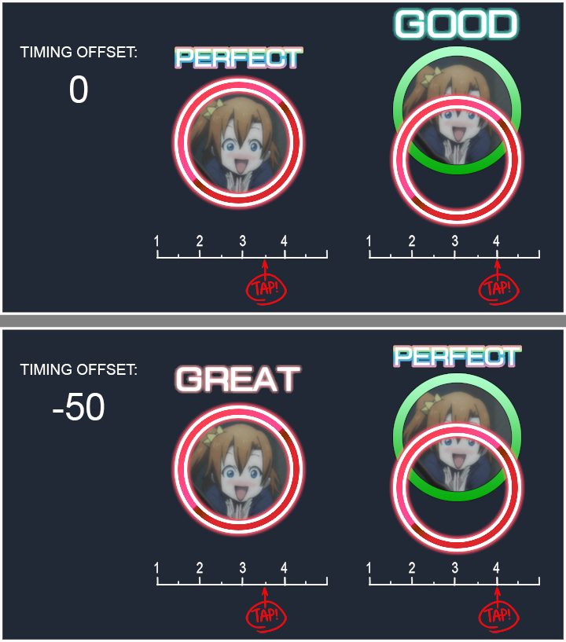
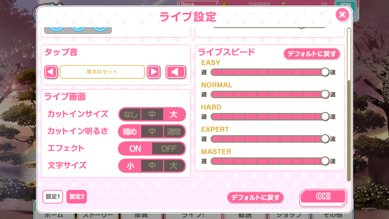
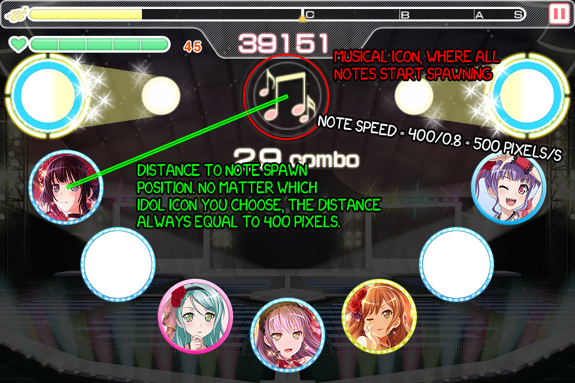
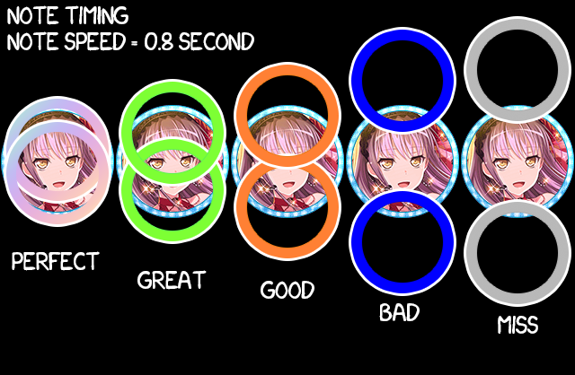

This theoretical article is now invalid. Please see this article for real-life observation!
For sake of clarity, SIF in here refers to SIF1, not SIF2!
Alright this is probably most questionable question in SIF. How SIF handles note timing and timing offset?

(Disclaimer: I do not own the image. Original imgur image here: https://imgur.com/Kh8RTwH)I'll explain SIF timing system first.
SIF uses actual time units (in seconds) to calculate how fast the notes are. In SIF there's timing setting in the live setting which is something like this (look at right slider, there are 5):

Everytime you slide to left (it's snapped tho), the time increase by 0.1 second, and everytime you slide to the right, the time decrease by 0.1 second. Based on those sliders, that means there are limits:
- Minimum value (all to the right) is 0.6 second
- Maximum value (all to the left) is 1.75 second
UPDATE: Winshley from reddit says that first 6 values in the slider increase/decrease the time by 0.15 second, up to point where it's 1.0 second. Then afterwards, the time increase/decrease by 0.1 second. Look at here.
That time variable is used to calculate the speed of the note. An example, if you set the slider all to the right then twice to the left, that means the note will took 800ms to reach idol position from the "musical" note icon which means the note velocity will be 500 pixel/second, look at visual below from my Live Simulator: 2 which uses aspects from SIF:

(To make things clear, it should be "Note Velocity = 500 pixel/second" there)That image explanation assumes some things: It assumes the whole canvas is 960x640, which is actually how SIF handles resolution. It also assumes the note speed is 800ms or 0.8s.
Now for tap accuracy, which determines if it's perfect, great, good, bad, or even miss is also based on that formula. But at first, look at this table:
| Judgement | Init. Accuracy Val. (px) | Acc. Dist. from Icon (px) |
|---|---|---|
| PERFECT | 16 | 12.8 |
| GREAT | 40 | 32 |
| GOOD | 64 | 51.2 |
| BAD | 112 | 89.6 |
| MISS | 128 | 102.4 |
(For more information, see the original image here: sif_judgement_value.png)
{kind=link}
The reason why you can't get "Bad" in swing note because for swing note, it's stated PERFECT if it's in Great accuracy range; it's stated GREAT if it's in Good accuracy range, and so on. And when the judgement range is drawn:

For other note speed, you can use this formula to determine the range:
AccuracyValue = AccuracyTable * max(NoteSpeed, 0.8)
Yes there's max statement there. As the note velocity is smaller, the judgement range is also bigger. And as the note
velocity is bigger, the judgement range is also smaller, but up to point in the excel table above. Note that the value
are both positive and negative
Now the timing offset in setting. It turns out that in SIF, the note distance calculation follow this formula:
NoteDistance = (1 - NoteTimeSinceSpawn/NoteSpeed) * 400 + TimingOffset
That's why if you decrease the timing offset, you have to tap the note later, and if you increase the timing offset, you have to tap the note sooner, but unfortunately that "NoteDistance" variable is only calculated when trying to get the judgement and doesn't reflect the actual note distance displayed in the screen, which is described in the first image in this blog post.
Some people find it unfortunate but some people is just deal with it. Fortunately Live Simulator: 2 handles offset differently. Instead of using that technique, Live Simulator: 2 shifts the beatmap by specificed amount in milliseconds.
UPDATE: It turns out that the "MISS" judgement is checked without taking timing offset into account, which is why in -50 offset, getting late "Bad" is near-impossible. Thanks to Winshley from reddit for pointing things up.
Based on that formula, it turns out that setting the note speed to less than 0.3125 second makes getting "PERFECT" judgement nearly impossible because the limiting formula described above. With 0.3125 second note speed, the note will travel 25.6 Pixel/AudioFrame, where AudioFrame is 0.02 second (20 FPS). Example, if note distance is 12.8, then in the next update, it will simply become -12.8, completely missed the "PERFECT" judgement range.
UPDATE2: Making things clear about which one is Note speed and which one is note velocity.
So to end this blog post, you shouldn't set your note speed to less than 0.3125 or Strawberry will Trap you up, then the Determination Symphony will determine your punishment.
Originally posted on my legacy Blogger: https://auahdark687291.blogspot.com/2018/03/sif-note-handling.html